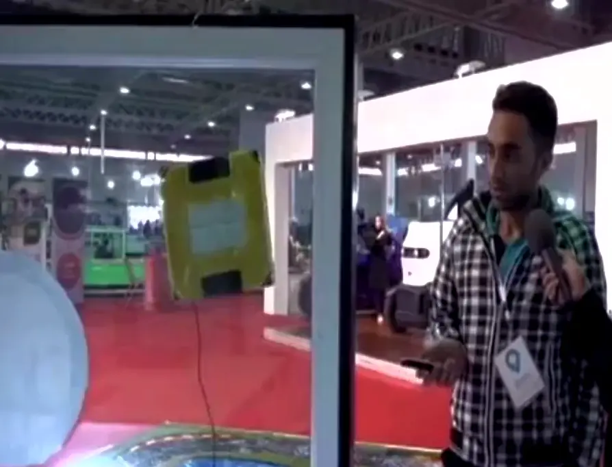
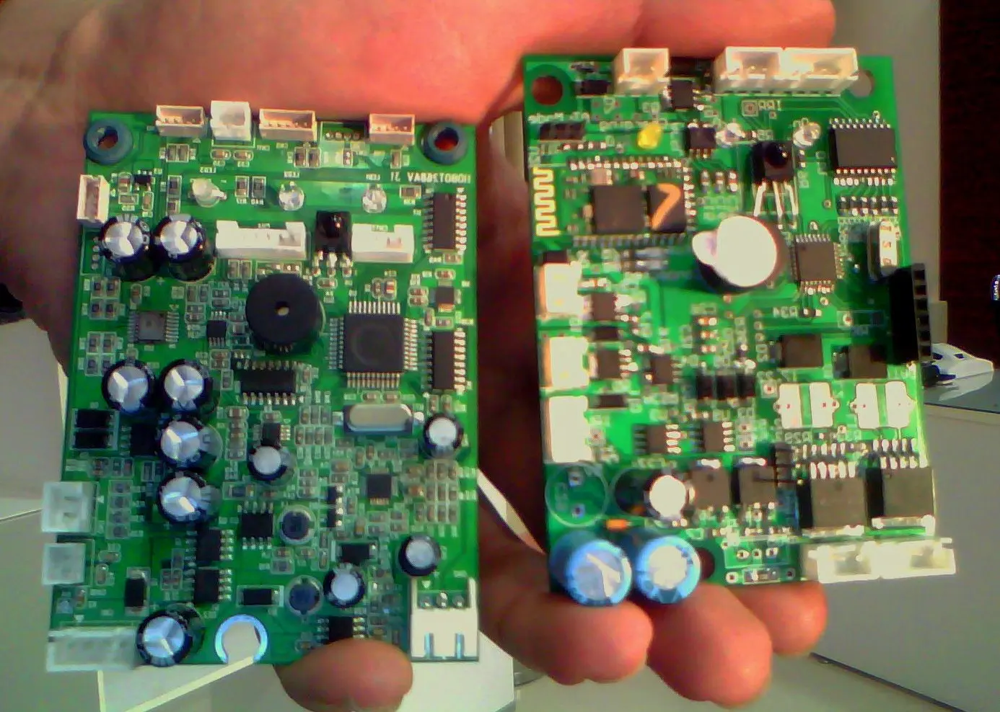

Autonomous Robotic Glass Cleaning Platform
Custom embedded control electronics, sensing, and remote operation for a robotic glass cleaner.
This industrial development project involved evaluating existing robotic glass cleaning platforms and developing a revised embedded control system for a selected base platform. My work focused on custom electronics, firmware development, power management, sensing, motor integration, and remote control.
The project progressed through product analysis, initial design, prototype development, functional testing, design refinement, and final system integration. The custom controller was designed to interface with the robot's existing motors, sensors, connectors, and mechanical structure.
To respect contractual intellectual property and confidentiality obligations, circuit details, component selections, PCB files, firmware, internal test data, and manufacturing documentation are not presented publicly.
My Contributions
My responsibility covered the development and integration of the embedded control system, from initial platform analysis through prototype testing and final technical handoff.
- Reviewed comparable robotic glass cleaning products and evaluated potential base platforms.
- Analyzed the selected robot's electrical, mechanical, sensing, and control requirements.
- Designed a custom embedded controller and PCB compatible with the robot's existing motors, sensors, wiring, and connectors.
- Developed embedded firmware for motion control, sensor monitoring, command processing, and operating modes.
- Integrated power management and electrical interfaces for the controller, sensors, communication modules, and robotic loads.
- Added wireless mobile control and infrared remote operation.
- Built and tested the prototype, performed hardware bring up, debugged electrical and firmware issues, and refined the design based on test results.
- Prepared technical documentation and supported the final system handoff.
System Architecture
The custom controller combined power distribution, embedded processing, sensing, communication, and motor interfaces within a single integrated control platform.
Custom Embedded Controller
The replacement controller coordinated sensor inputs, remote commands, motor operation, and system status. The PCB was designed around the physical and electrical constraints of the existing robot.
Power and Interface Design
The electronics supported the different voltage and current requirements of the controller, sensors, communication interfaces, and robotic loads while maintaining compatibility with the original wiring and connectors.
Control Interfaces
The platform supported wireless operation through a mobile interface as well as infrared remote control. Both command methods were integrated into the embedded firmware and robot operating logic.
Prototype Development
The development process included assembly, board bring up, firmware testing, motor and sensor integration, functional validation, troubleshooting, and iterative design improvements.
Engineering Results
The project produced an integrated replacement controller that supported the robot's existing hardware while adding new control and communication capabilities.
Project Gallery
Selected images and videos showing the robotic platform, prototype testing, and system operation.

